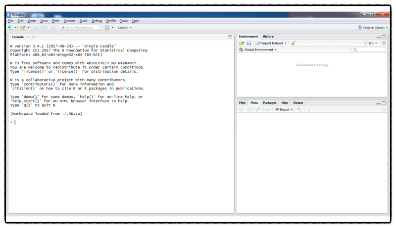
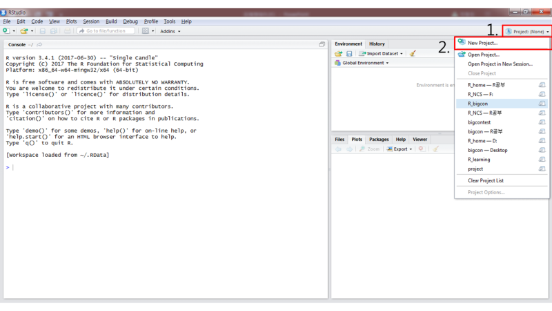
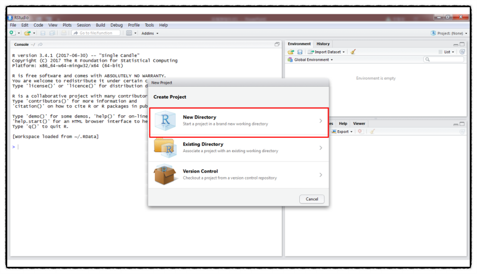
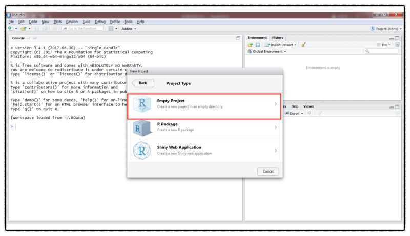
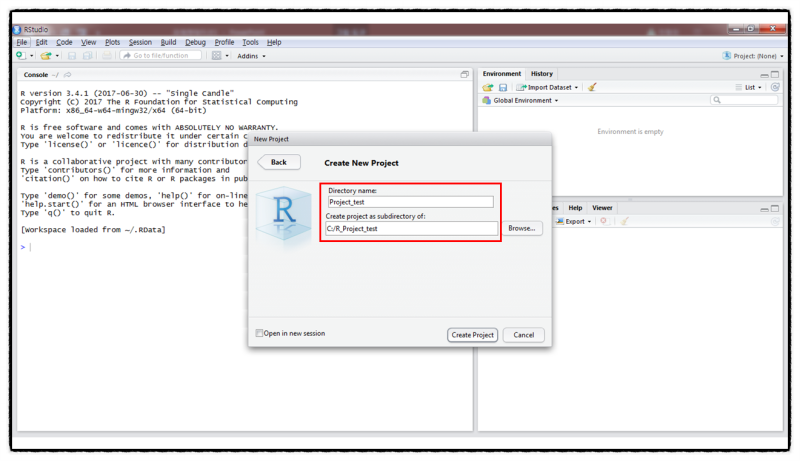
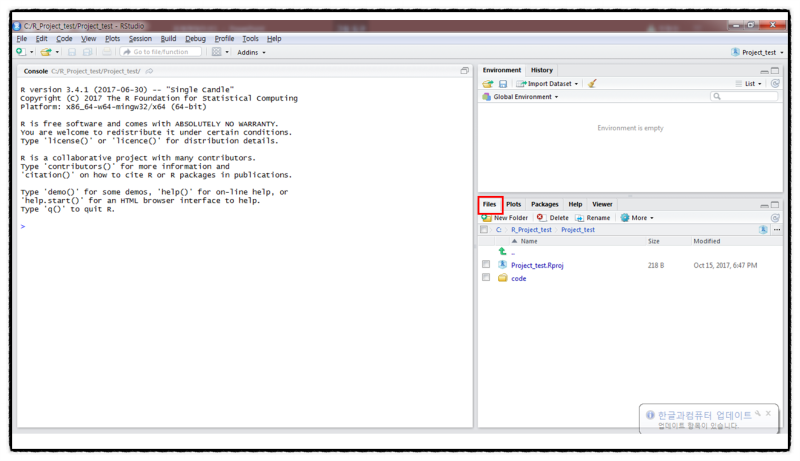
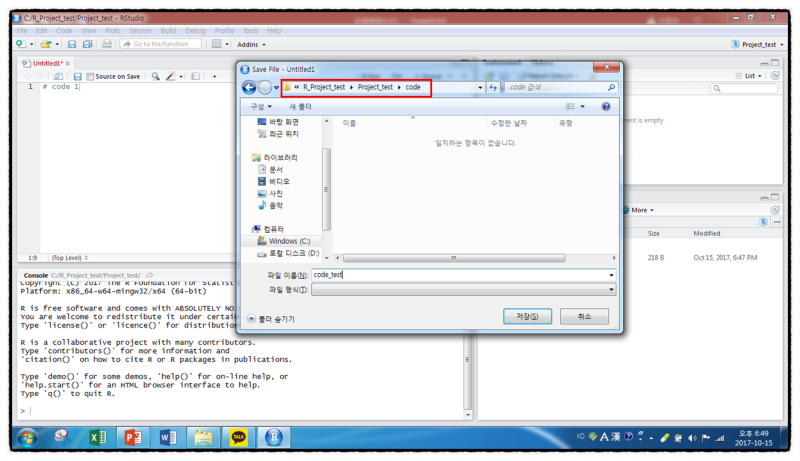
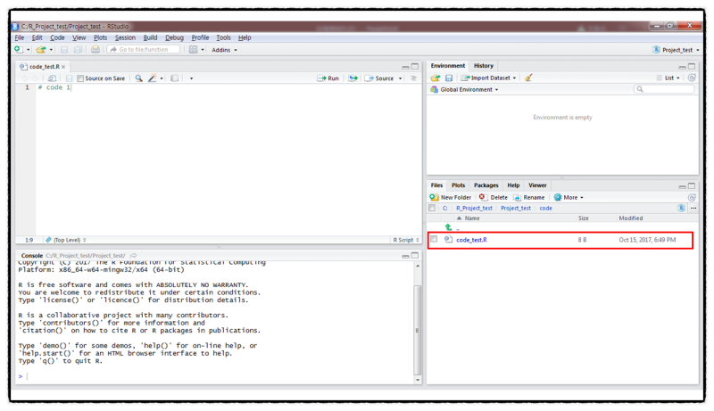
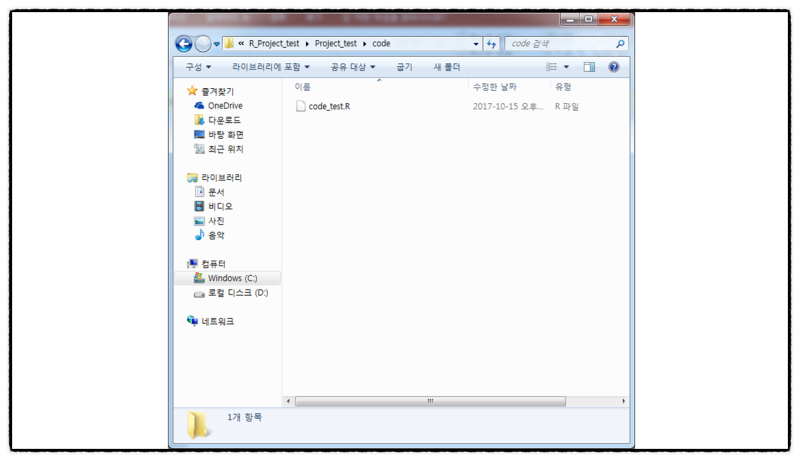

차례
프로젝트 생성 방법
프로젝트 관리 방법
R studio를 사용하지만, project를 사용하는 사람은 적다.
알고 쓰면 편리하기에 쓴이는 많이 애용하고 있다.
프로젝트 생성 방법
1) R studio 실행 - R studio 실행 초기 화면

2) Project – New project

3) New Directory

4) Empty Project

5) Browse (경로 지정) –> Directory Name 지정
- 앞으로 code나 data를 관리할 폴더를 지정

프로젝트 관리 방법
해당 경로의 폴더에서 code 폴더 + data 폴더 생성
code에서 R파일/data에는 R사용할 때 사용한 data 보관
해당 사진은 data 폴더는 생략되어 있다.
다른 컴퓨터나 USB에 파란색 아이콘(빨강 네모)는 꼭 들어가야 한다!
저곳에 할당된 값들이 저장된다고 생각하면 된다.
프로젝트 파일내의 파란색 아이콘을 더블클릭하면 R studio가 실행된다.

우측 하단의 File을 클릭하면,
폴더 검색 및 R코드를 자유롭게 불러 올 수 있다.

R code를 저장하는 모습
앞으로 R코드는 해당 프로젝트 파일 - code에 저장!

밑의 사진과 같이 저장된 R파일을 프로젝트에서 관리할 수 있음을 볼 수있다.
프로젝트에서 관리할 수 있음을 볼 수 있다.
해당 폴더에서 관리 할 수 있다.
앞으로 이 프로젝트를 알집으로 압축하여 들고 다니면 된다.
그러면 해당 할당된 값을 그대로 다른 컴퓨터에서 사용이 가능하다!

